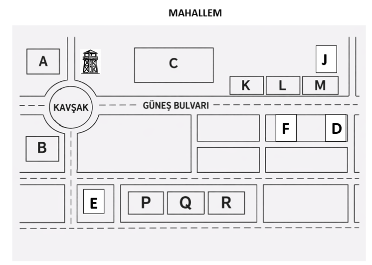

Doğru Cevap Sayısı
–
1
Dinleme Metni — Soru-Cevap Eşleştirme
Sorular 1–8
Dinlediğiniz her soruya en uygun cevabı (A, B veya C) işaretleyiniz. Soruları iki defa dinleyeceksiniz.
Soru 1 — Bu hafta sonu için bir planın var mı?
📝 AçıklamaSoru hafta sonu planını soruyor. A seçeneği doğrudan plan belirtir.
Soru 2 — Sabahları uyanmakta zorlanıyor musun?
📝 AçıklamaB seçeneği uyanmakta zorlanıldığını açıkça ifade eder. A ilgili ama doğru cevap değildir.
Soru 3 — En son ne zaman kitap okudun?
📝 AçıklamaC seçeneği hem zaman hem de kitap okuma bilgisi içerir.
Soru 4 — En çok hangi yemeği yapmayı seviyorsun?
📝 AçıklamaB seçeneği belirli bir yemek adı vererek soruyu cevaplıyor.
Soru 5 — Yakın zamanda hiç konsere gittin mi?
📝 AçıklamaSoru geçmiş deneyim soruyor. A seçeneği bu deneyimi açıkça anlatıyor.
Soru 6 — En sevdiğin mevsim hangisi ve neden?
📝 AçıklamaSoru hem mevsim hem de kişisel gerekçe istemektedir. B seçeneği hem mevsimi hem nedeni açıkça belirten tek doğru cevaptır.
Soru 7 — Bugün en çok neye zaman ayırdın?
📝 AçıklamaA seçeneği bugün en çok hangi işe zaman ayrıldığını net biçimde ifade ediyor.
Soru 8 — Gelecekte nerede yaşamayı hayal ediyorsun?
📝 AçıklamaSoru gelecekte yaşamak istenen yeri soruyor. B kişisel bir hayali ifade ediyor.
2
Dinleme Metni — Doğru / Yanlış
Ebru Sanatı · Sorular 9–14
Dinlediğiniz metne göre aşağıdaki cümleler için DOĞRU (A) ya da YANLIŞ (B) seçeneklerinden birini işaretleyiniz.
Soru 9
Ebru sanatında desenler, yoğunlaştırılmış suyun üzerine yapılan boya çalışmalarıyla oluşturulur.
📝 AçıklamaMetinde ebrunun, kitre ile yoğunlaştırılmış su üzerine boyaların serpiştirilmesiyle yapıldığı belirtilmektedir.
Soru 10
Ebru sanatının adı yalnızca Arapça kökenli bir kelimeden gelmektedir.
📝 AçıklamaMetinde ebru isminin kökeni hakkında farklı görüşler olduğu, Farsça "ebr" ve "âb-ı rû" ifadeleriyle ilişkilendirildiği belirtilmektedir. Soruda ise Arapça denmektedir.
Soru 11
Osmanlı döneminde ebru, bazı resmi belgelerde güvenlik amacıyla da kullanılmıştır.
📝 AçıklamaMetinde devlet belgelerinin taklit edilmesini önlemek amacıyla ebrunun güvenlik unsuru olarak kullanıldığı ifade edilmektedir.
Soru 12
Günümüze ulaşan en eski ebru örnekleri 8. yüzyıla aittir.
📝 AçıklamaMetne göre günümüze ulaşan en eski ebru örnekleri 16. yüzyıla aittir.
Soru 13
Necmeddin Okyay ve Hatip Mehmet Efendi, ebru sanatında yeni tarzların oluşmasına katkı sağlamıştır.
📝 AçıklamaMetinde bu iki ustanın kendi isimleriyle anılan ebru tarzları geliştirdiği belirtilmektedir.
Soru 14
Ebru sanatı günümüzde tamamen unutulmuş ve uygulanmayan bir sanat dalıdır.
📝 AçıklamaMetnin sonunda ebru sanatının UNESCO Somut Olmayan Kültürel Miras Listesi'nde yer alan yaşayan bir gelenek olduğu ifade edilmektedir. Bu nedenle unutulmuş bir sanat değildir.
3
Dinleme Metni — Konuşmacı Eşleştirme
Mobil Uygulamalar · Sorular 15–18
İnsanların farklı durumlardaki konuşmalarını dinleyiniz. Her konuşmacının (1–4) konuşmalarını ait olduğu seçeneklerle (A–F) eşleştiriniz. Seçmemeniz gereken İKİ seçenek bulunmaktadır.
S15
1. Konuşmacı
📝 Açıklama"Buzdolabındaki malzemeleri seç, uygulamaya yaz, sana dakikalar içinde hazırlayabileceğin en lezzetli tarifleri sunsun. İsrafı önle..." → A
S16
2. Konuşmacı
📝 Açıklama"İlgi alanlarını seç, kaç saatin olduğunu belirt; uygulama sana özel, yürüyüş mesafeli ve rehberli bir gezi planı çıkarsın." → B
S17
3. Konuşmacı
📝 Açıklama"Günün stresinden ve koşturmacasından uzaklaşmak mı istiyorsun? Günde sadece 10 dakika ayır, iç huzurunu yakala." → E
S18
4. Konuşmacı
📝 Açıklama"Kelimenin fotoğrafını çek, anlamını öğren ve kendi dijital sözlüğüne ekle." → C | Boşta kalanlar: D (fiziksel sağlık) ve F (zaman yönetimi) metinde geçmiyor.
4
Dinleme Metni — Yer / Bina Krokisi
Sorular 19–23
Dinleme metnine göre haritadaki yerleri (A–Q) işaretleyiniz. Seçilmemesi gereken seçenekler bulunmaktadır.

S19
Gençlik Merkezi
📝 AçıklamaGençlik Merkezi → A
S20
Meslek Lisesi
📝 AçıklamaMeslek Lisesi → J
S21
Teknoloji Atölyesi
📝 AçıklamaTeknoloji Atölyesi → L
S22
Kuru Temizleme
📝 AçıklamaKuru Temizleme → F
S23
Ev
📝 AçıklamaEv → Q
5
Dinleme Metni — Diyalog Analizi
Sağlık Diyalogları · Sorular 24–29
Üç farklı diyaloğu dinleyiniz ve dinleme metinlerine göre doğru seçeneği (A, B veya C) işaretleyiniz.
Soru 24 — 1. Diyalog: Bağırsak sağlığıyla ilgili hangi bilgi doğrudur?
📝 AçıklamaMetinde bağırsakların "ikinci beyin" olarak adlandırıldığı ve mutluluk ile sakinlik sağlayan hormonların büyük kısmının burada üretildiği belirtilmektedir.
Soru 25 — 1. Diyalog: Aşağıdakilerden hangisinden bahsedilmemektedir?
📝 AçıklamaYoğurt, kefir, doğal sirke ve meyan kökü çayından bahsedilmektedir. Düzenli yüzmenin bağırsak florasına etkisinden söz edilmemiştir.
Soru 26 — 2. Diyalog: Gün boyu süren yorgunluğun temel nedenlerinden biri nedir?
📝 AçıklamaKonuşmacı, yorgunluğun en büyük sebeplerinin hareketsizlik, kalitesiz uyku ve ekran maruziyeti olduğunu söylemektedir.
Soru 27 — 2. Diyalog: Aşağıdakilerden hangisinden bahsedilmemektedir?
📝 AçıklamaLimonlu-kaya tuzlu su ve açık hava yürüyüşü anlatılmıştır. B vitamini takviyeleri hakkında bilgi verilmemiştir.
Soru 28 — 3. Diyalog: Göz sağlığını korumak için önerilen yöntemlerden biri nedir?
📝 AçıklamaMetinde "20 dakikada bir, 20 saniye boyunca uzak bir noktaya bakma" kuralı önerilmektedir.
Soru 29 — 3. Diyalog: Aşağıdakilerden hangisinden bahsedilmemektedir?
📝 AçıklamaYaban mersini çayı ile koyu yeşil yapraklı sebzeler ve yumurta sarısından bahsedilmiştir. Kontakt lens kullanımıyla ilgili herhangi bir bilgi verilmemiştir.
6
Dinleme Metni — Uzun Metin Soruları
Halil Efendi ve Sahaf Dünyası · Sorular 30–35
Dinleme metnine göre doğru seçeneği (A, B ya da C) işaretleyiniz.
Soru 30 — Halil Efendi'nin nadide eserlerden elde ettiği servetten sonraki maddi durumuyla ilgili çıkarılabilecek en doğru sonuç hangisidir?
📝 AçıklamaMetinde Halil Efendi'nin servetinin neredeyse tamamını "belki daha nadidesini bulurum" düşüncesiyle yeniden açık artırmalara ve eski eser arayışlarına yatırdığı belirtilmektedir.
Soru 31 — Halil Efendi'nin servetin ve şöhretin huzur getirmediğini belirtmesi hangisiyle en iyi açıklanabilir?
📝 AçıklamaHalil Efendi, paradan çok huzuru ve manevi tatmini önemsediğini vurgulamaktadır. "Cebimde param yok, zihnimde huzurum çok." sözü bunu açıkça göstermektedir.
Soru 32 — Halil Efendi'nin "Kitap raftan size 'beni al' diye fısıldayacak." sözü onun hangi düşünce biçimine sahip olduğunu gösterir?
📝 AçıklamaKitabın kendisine "beni al" diyeceğini ve eserleri sezgileriyle seçtiğini söylemesi, kararlarında sezgisel ve duygusal yaklaşım benimsediğini göstermektedir.
Soru 33 — Halil Efendi'nin servet elde etmesi durumunda planladığı projeler göz önüne alındığında karakterini en iyi yansıtan hangisidir?
📝 AçıklamaElde edeceği servetle bilim akademileri, araştırma merkezleri ve eğitim projeleri kurmak istemesi onun toplumsal fayda odaklı ve yardımsever biri olduğunu göstermektedir.
Soru 34 — Geçmişteki davranışları dikkate alındığında, yeniden büyük bir servet elde etmesi durumunda gerçekleşme olasılığı en yüksek olan hangisidir?
📝 AçıklamaGeçmişte elde ettiği büyük servetleri yeniden nadide eser arayışlarına yatırdığı belirtilmektedir. Bu nedenle benzer davranışı tekrar göstermesi en olası seçenektir.
Soru 35 — Halil Efendi'nin eski kitaplara ve sahaf dünyasına yönelmesinin temel sebebi hangisidir?
📝 AçıklamaMetinde "İşsizdim, geleceğe dair hiçbir güvencem yoktu." ifadesi yer almaktadır. Bu durum onu eski kitaplar ve sahaf dünyasında bir çıkış yolu aramaya yöneltmiştir.